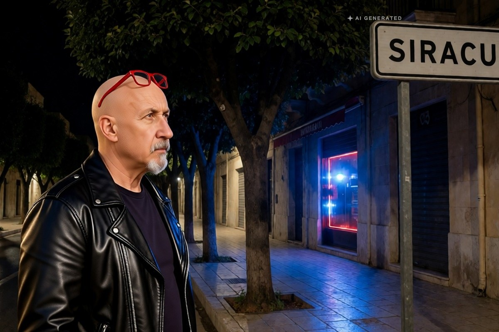

Cronaca · 7 novembre 2026
Siracusa, spari davanti a un locale della movida: due fermati

Tre colpi di pistola contro un locale di viale Regina Margherita, nella notte fra venerdì e sabato, senza feriti. I carabinieri hanno fermato due uomini a meno di un giorno dai fatti. Fra le ipotesi, un ingresso negato.
di Franco Zanghì
Nella notte fra il 6 e il 7 novembre 2026, intorno all'una e mezza, qualcuno ha sparato contro un locale di viale Regina Margherita a Siracusa, a due passi da Ortigia. Davanti all'ingresso c'erano dei ragazzi. Nessuno è stato ferito.
I carabinieri della compagnia di Siracusa hanno fermato due uomini. Il provvedimento, dato il 7 novembre e confermato dalle testate il giorno successivo, è arrivato a meno di ventiquattro ore dai fatti. Per le persone fermate vale la presunzione d'innocenza.
Che cosa dicono le ricostruzioni
Le prime versioni, raccolte anche fra i presenti, parlavano di un uomo solo con il volto coperto. La ricostruzione successiva, anticipata da La Sicilia e poi confermata dagli altri quotidiani, indica due persone su uno scooter e tre colpi esplosi verso il locale, prima della fuga.
Gli investigatori hanno lavorato sulle telecamere della zona, e BlogSicilia ha pubblicato un video della sparatoria. Il fermo è ora al vaglio della Procura di Siracusa.
Che cosa vuol dire il fermo
Il fermo di indiziato di delitto non è un arresto deciso da un giudice: lo dispone il pubblico ministero, o in casi di urgenza la polizia giudiziaria, quando ci sono gravi indizi e il pericolo che la persona si sottragga alle indagini. È un provvedimento a tempo: entro quarantotto ore deve essere trasmesso al giudice per le indagini preliminari, che entro le quarantotto ore successive decide se convalidarlo e se applicare una misura cautelare. Se il giudice non convalida, la persona torna libera.
È la ragione per cui, in questa fase, i nomi non si pubblicano e le ricostruzioni restano attribuite a chi le riferisce: fra il fermo e la prima decisione di un giudice passano ore, non mesi, e in quelle ore il quadro può cambiare.
Il possibile movente
Fra le ipotesi, riportata dai quotidiani, c'è un ingresso negato: il gestore non avrebbe fatto entrare i due nel locale. Resta un'ipotesi, e toccherà agli accertamenti stabilire se regge.
Se davvero tutto nasce da un no sulla porta, il problema è più grande di una lite. Il problema è una pistola in tasca il sabato sera, in mezzo ai ragazzi. E chi lavora nei locali lo sa: dire di no, certe sere, fa paura. Il sindaco Francesco Italia ha espresso solidarietà al titolare.
Fonti
- Giornale di Sicilia, «Gli spari contro un locale a Siracusa, due fermati», 8 novembre 2026
- Quotidiano di Sicilia, «Spari contro un locale di Siracusa, due uomini fermati», 8 novembre 2026
- Nuovosud, «Siracusa, spari contro un locale: fermati due uomini», 8 novembre 2026
- BlogSicilia, «Sparatoria a Siracusa, il video: i colpi davanti al locale della movida», 7 novembre 2026
- Giornale di Sicilia, «Siracusa, spari nella notte contro un locale con clienti», 7 novembre 2026
- La Sicilia, 7 novembre 2026, per la ricostruzione dei due uomini sullo scooter e dei tre colpi
Alla stesura della bozza il fermo dei due uomini era riportato dalla sola Sicilia; in sede di ricontrollo è stato confermato da Giornale di Sicilia, Quotidiano di Sicilia e Nuovosud. Il movente resta un'ipotesi investigativa, e la posizione dei fermati è al vaglio della Procura.